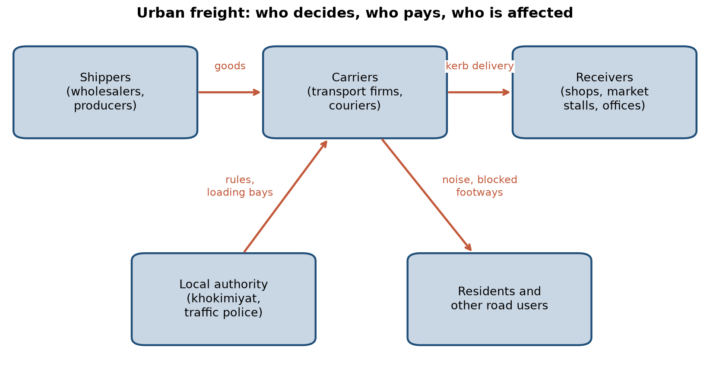
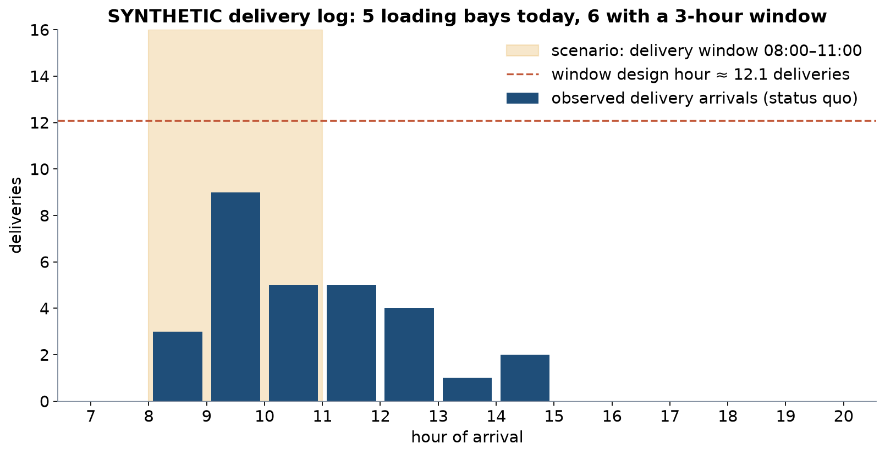
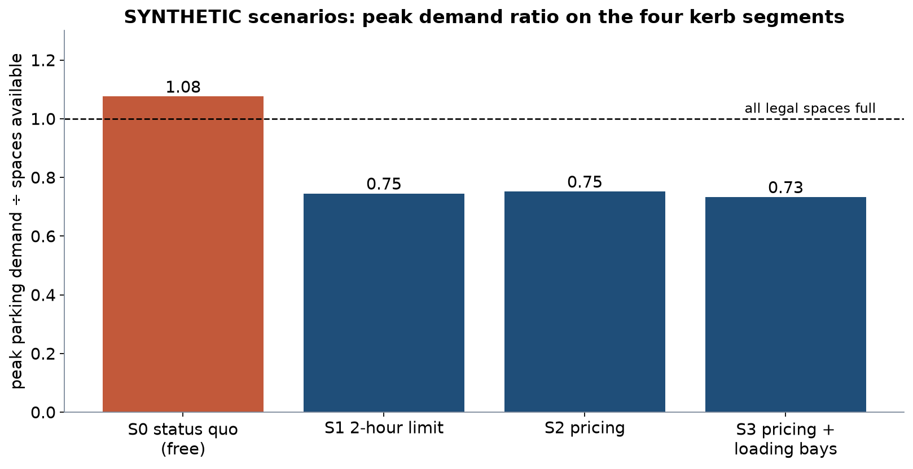

LEC22 · Urban Transport Systems Planning and Design · TSTU · Prof. J. Sodikov
1 / 22
What you will be able to do after today
Describe the urban freight system and the actors who shape it
Compare time windows, loading areas and routing rules
Size loading bays from a delivery survey
Reduce conflicts between deliveries, public transport, walking and cycling
2 / 22
This lecture is about urban freight: the goods that move into and around the city. You will describe the urban freight system and the actors who shape it, and compare time windows, loading areas and routing rules. You will size loading bays from a delivery survey. You will also learn to reduce conflicts between deliveries, public transport, walking and cycling.
Why urban freight matters
Every shop, market stall and office is supplied by vehicles that must stop at the kerb
The last kilometre is often the most expensive part of a supply chain
Freight is a small share of traffic but a large share of kerb conflicts
Planners often ignore it because data are scarce
3 / 22
Every shop, market stall and office is supplied by vehicles that must stop at the kerb. The last kilometre is often the most expensive part of a supply chain. Freight is a small share of traffic but causes a large share of the conflicts at the kerb. Planners often leave freight out because there are few data about it.
Who decides, who pays, who is affected

Receivers set delivery times; carriers choose vehicles and routes; the city sets kerb rules.
4 / 22
The diagram shows the actors in urban freight. Shippers, such as wholesalers and producers, send goods, and carriers, such as transport firms and couriers, deliver them to receivers such as shops, market stalls and offices. The local authority sets rules and loading bays, while residents and other road users bear the noise and blocked footways. Each actor looks after its own costs.
Types of urban freight trips
Retail and market supply: frequent, early, predictable
Parcels and e-commerce: many small drops, growing fast
Construction materials and waste: heavy vehicles, fixed sites
Service trips: technicians and maintenance vans parked for hours
Through freight: should stay on ring roads and entry corridors
5 / 22
Urban freight is made of several kinds of trips. Retail and market supply is frequent, early and predictable, while parcels for online shopping mean many small drops and are growing fast. Construction materials and waste need heavy vehicles at fixed sites, and service vans may stay parked for hours. Through freight should stay on ring roads and entry corridors.
Urban freight measures (GIZ SUTP Module 1g)
Measure
What it does
Watch out for
Delivery time windows
Keeps vans out of the busiest hours
Concentrates deliveries; staff costs for receivers
Loading bays
Gives vans a legal place to stop
Useless without enforcement
Vehicle size and weight limits
Protects streets and bridges
More, smaller vehicles
Off-hour delivery
Uses empty streets at night
Noise for residents
Consolidation and cargo bikes
Fewer vans in the centre
Needs a site and a business model
6 / 22
The table, based on GIZ SUTP Module 1g, lists five freight measures with what each does and what to watch out for. Time windows keep vans out of the busiest hours but concentrate deliveries and add staff costs for receivers. Loading bays give vans a legal place to stop, but they fail without enforcement. Size limits can create more, smaller vehicles, night delivery brings noise, and consolidation centres or cargo bikes need a site and a business model.
Time windows — a trade-off, not a free gain
A narrow window moves deliveries out of the peak
But the same deliveries now arrive in fewer hours
More vans at once → more loading space needed in the window
Receivers must staff the shop to accept goods at that time
Off-peak windows work best with shared, time-limited bays
7 / 22
A narrow delivery window moves deliveries out of the peak, but the same deliveries then arrive in fewer hours. More vans arrive at once, so more loading space is needed during the window. Receivers must also staff the shop to accept goods at that time. Off-peak windows work best with shared bays that have time limits.
Worked example: sizing loading bays
Busiest hour: 9 deliveries; mean dwell: 20 minutes
Bay-hours needed = 9 × 20 ÷ 60 = 3
At 70% target utilisation: 3 ÷ 0.7 = 4.3 → 5 bays
Each bay about 12 m of kerb: 60 m, or 10 parking spaces
The same bays can be parking after the delivery window
8 / 22
In the busiest hour there are 9 deliveries, each with a mean dwell of 20 minutes. That needs 9 × 20 ÷ 60 = 3 bay-hours in the hour. With a target use of 70%, you need 3 ÷ 0.7 = 4.3 bays, rounded up to 5. At about 12 m of kerb each, they take 60 m, the space of 10 parked cars, but they can serve parking after the delivery window.
Designing loading areas
Place bays where receivers are, not where space is easiest
Keep them clear of crossings, bus stops and cycle tracks
Sign the hours; mark the bay; enforce from day one
Allow trolleys: a dropped kerb and a clear footway path
Review use after three months and adjust
9 / 22
Put loading bays near the receivers, not where space is easiest to find. Keep them clear of crossings, bus stops and cycle tracks. Sign the hours, mark the bay and enforce it from the first day. Leave a dropped kerb and a clear footway for trolleys, and review how the bays are used after three months.
Conflicts with passenger transport, walking and cycling
Vans double-parked in the kerb lane block buses and bus stops
Loading on footways pushes pedestrians into the road
Vans in cycle lanes force cyclists into traffic
Reversing vehicles at markets are a safety risk for children and older people
Design response: a legal place to stop, close enough to be used
10 / 22
Vans double-parked in the kerb lane block buses and bus stops. Loading on footways pushes pedestrians into the road, and vans in cycle lanes force cyclists into traffic. Reversing vehicles at markets put children and older people at risk. The design answer is a legal place to stop that is close enough for drivers to use it.
External connections
Through freight belongs on ring roads and entry corridors, not on local streets
Terminals and wholesale markets at the edge decide where trucks go
Sodikov et al.: traffic pattern and safety on the M-41 entry corridor
Sodikov (2008): road upgrading and overland trade on the Asian Highway Network
11 / 22
Through freight belongs on ring roads and entry corridors, not on local streets. Terminals and wholesale markets at the city edge decide where trucks go. Prof. Sodikov's research covers this scale. One study looks at traffic and safety on the M-41 entry corridor, and a 2008 study looks at how upgrading roads affects overland trade along the Asian Highway Network.
Tashkent: loading at a market street
OSM markets and the synthetic LAB11 delivery log at Mirobod bozori
12 / 22
The second part of the lecture looks at loading at a market street in Tashkent. It uses the markets mapped in OpenStreetMap and the synthetic LAB11 delivery log at Mirobod bozori.
Markets are freight magnets
OSM maps 66 markets inside the city
Each one is supplied every morning by vans and small trucks
No open data on freight volumes, loading bays or delivery times
Your survey is the only evidence: log arrivals, dwell and position
13 / 22
OpenStreetMap maps 66 markets inside the city, and vans and small trucks supply them every morning. No open data on freight volumes, loading bays or delivery times were found for Tashkent. So your own survey is the evidence: log when each vehicle arrives, how long it stays and where it stops.
Deliveries at the LAB11 site

SYNTHETIC: 29 deliveries, 14% off the kerb; 9 deliveries in the busiest hour, mean dwell 19.3 min.
14 / 22
The chart shows when the 29 synthetic deliveries arrive during the day, and 14% of them stop off the kerb. In the busiest hour there are 9 deliveries, with a mean dwell of 19.3 minutes. The shaded band marks a possible three-hour delivery window in the morning. With a window, the same deliveries arrive closer together, so more bays are needed, but only during those hours.
Comparing kerb policies

SYNTHETIC peak demand ratio: 1.08 / 0.75 / 0.75 / 0.73 for status quo, time limit, pricing, pricing + loading bays.
15 / 22
The chart compares four synthetic kerb policies by their peak demand ratio, which is peak parked vehicles divided by the spaces available. A ratio above 1 means more vehicles than legal spaces, so some park off the kerb. The status quo gives 1.08, a time limit and pricing each give 0.75, and pricing with loading bays gives 0.73. The scenario responses are assumptions, not measured values for Tashkent, and LAB11 tests them.
Reading the scenarios
Both a time limit and pricing remove the overflow onto the footway
A time limit works only if it is enforced every day
Time-shared loading bays: 5 bays today, 6 with a 08:00–11:00 window (12 parking spaces)
With pricing, the kerb absorbs the bays and still has spare spaces
16 / 22
Both a time limit and pricing remove the overflow onto the footway in this synthetic case. But a time limit works only if it is enforced every day. Shared loading bays need 5 bays today and 6 with an 08:00–11:00 window, which take 12 parking spaces. With pricing, the kerb can hold these bays and still has spare spaces.
A parking and loading policy: who does what
Measure
Responsible body
Affected groups
Agreement needed
Kerb inventory and signs
Khokimiyat road department
All kerb users
Traffic police on sign content
Paid short-stay parking
City parking operator
Shoppers, staff, residents
Tariff decision by the khokimiyat
Loading bays with hours
Khokimiyat with market administration
Traders, carriers
Market and carriers on hours
Footway bollards and enforcement
Traffic police, district khokimiyat
Drivers, pedestrians
Budget and enforcement plan
17 / 22
A kerb policy needs several bodies to act together. The table gives each measure a responsible body, the groups it affects and the agreement it needs. Paid parking, for example, needs a tariff decision by the khokimiyat (city or district administration). The market administration must agree loading hours with traders and carriers. The roles are indicative, and in Week 12 you will check who is actually responsible.
Discussion
Design the kerb in front of one market or shopping street on your corridor: what goes where, and at what hours?
Sketch in pairs; one pair presents and the class finds the conflicts.
18 / 22
This task asks you to design the kerb in front of one market or shopping street on your corridor. Decide what goes where and at what hours, using the time-of-day plan from LEC21. Then look for the conflicts in your design.
Key takeaways
Freight is small in traffic but large at the kerb
Time windows concentrate deliveries — size bays for the window
Loading bays need hours, markings and enforcement
A kerb plan is a policy: it decides who uses the street, and when
19 / 22
Freight is a small part of traffic but a large part of kerb use. Time windows concentrate deliveries, so size the bays for the window. Loading bays need signed hours, markings and enforcement. A kerb plan is a policy, because it decides who uses the street and when.
Before LAB11 and P11
Open LAB11_parking.gpkg in QGIS and LAB11_synthetic_kerbside_survey.xlsx in Excel
Walk your corridor once in the morning and once in the evening peak; photograph the kerb
Read the required urban freight module on stakeholders and GIZ Module 1g
20 / 22
Before the lab, open LAB11_parking.gpkg in QGIS and the synthetic kerbside survey workbook in Excel. Visit your corridor once in the morning peak and once in the evening peak, and photograph the kerb without showing number plates. Read the required urban freight module on stakeholders and GIZ Module 1g, both in this week's reading list.
References
Tavasszy, L., et al. Sustainable Urban Freight Transport: A Global Perspective. TU Delft OpenCourseWare / DelftX. https://ocw.tudelft.nl/courses/sustainable-urban-freight-transport-global-perspective/
GIZ. Sustainable Urban Transport Project (SUTP) Sourcebook modules (e.g. 1g Urban Freight; 2a Land Use Planning; 3d Non-Motorised Transport; 5e Transport and Climate Change). Eschborn: GIZ. https://www.sutp.org
Global Designing Cities Initiative & NACTO (2016). Global Street Design Guide. Island Press. https://globaldesigningcities.org/publication/global-street-design-guide/
Sodikov, J. I., et al. (2026). Traffic pattern and safety evaluation on the M-41 corridor using mixed-methods analysis. AIP Conference Proceedings (2025 Int. Conf.).
Sodikov, J. I. (2008). The effect of road upgrading on overland trade in the Asian Highway Network. Eurasian Journal of Business and Economics.
Synthetic teaching dataset generated for this course (method and random seed in each workbook's README sheet).
MIT Department of Urban Studies and Planning. 11.540 Urban Transportation Planning and Policy (J. Aloisi). MIT Course Catalog, Course 11 subjects. https://catalog.mit.edu/subjects/11/